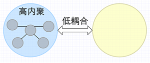

- . 理想情况下，希望模块具有高内聚和低耦合，即模块内元素之间的功能联系紧密，同时与其他模块之间的依赖关系较弱
- . 有助于提高代码的可维护性、重用性和扩展性
-
 高内聚和低耦合
内聚 Cohesion
- . 内聚是从功能角度来度量模块内的联系，一个好的内聚模块应当恰好做一件事。它描述的是模块内的功能联系
- . 内聚类型并不是绝对的，一个模块可能同时具有多种内聚类型的特点，但通常会有一种主导
- 偶然内聚 Coincidental Cohesion
- . 也叫巧合内聚
- . 模块内的元素之间没有明确的功能联系，仅仅是因为某种偶然的原因而被组合在一起
- . 最低级别的内聚，通常会导致代码难以维护和理解
- . 举例：一个模块中包含了各种无关的函数，这些函数之间没有共享的数据或交互行为，它们只是被放在同一个模块中
- 逻辑内聚 Logical Cohesion
- . 模块内的元素按照某种逻辑关系相关联，共同实现目标：一个或多个功能
- . 较高级别的内聚，模块内的元素在逻辑上相互关联，共同解决某个问题
- . 举例：一个处理订单的模块，包含创建订单、查询订单、修改订单等函数，它们在逻辑上都与订单处理相关
- 时间内聚 Temporal Cohesion
- . 模块内部的各个组成部分所包含的处理动作必须在同一时间内执行
- . 执行一系列与时间相关的操作。如初始化
- 过程内聚 Procedural Cohesion
- . 模块内的元素按照某种执行顺序相关联，共同完成一项任务或处理一种情况
- . 要求模块内的元素按照特定的过程顺序执行
- . 举例：一个排序模块，包含选择排序、冒泡排序、插入排序等函数，它们按照不同的排序算法的过程顺序执行
- 通信内聚 Communicational Cohesion
- . 模块内的元素通过共享数据进行交流和协作，彼此依赖于共享的数据或信息
- . 要求模块内的元素在完成任务时通过通信实现协作
- . 举例：一个用户管理模块，包含了添加用户、删除用户、更新用户信息等函数，它们通过共享的用户数据进行交流和协作
- 顺序内聚 Sequential Cohesion
- . 顺序执行
- . 通常一个处理元素的输出数据作为下一个处理惇元素的输入数据
- 功能内聚 Functional Cohesion
耦合
- . 耦合是软件结构中各模块之间相互连接的一种度量
- . 耦合强弱取决于模块间接口的复杂程度、进入或访问一个模块的点以及通过接口的数据
- . 不同模块之间的关系就是耦合；根据耦合程度可以分为7种，耦合度依次变低
- 内容耦合
- . A直接访问B的数据
- . 内容耦合极易出现程序错误，大多高级语言在设计时已经禁止出现内容耦合
- 公共耦合
- . 多个模块共同访问同一个 公共|全局 的数据环境
- . 复杂度随着模块数量的增加显著增加
- . 公共环境可以是：全局数据结构、共享的通信区、内存的公共覆盖区、任何存储介质上的文件、物理设备等
- . 应用：几个模块对同一个数据库的查询、模块对配置文件的访问
- 外部耦合
- . 多个模块共同访问同一个 全局简单变量 ，非全局数据结构，但不是通过参数表传递
- . 应用：访问配置文件中某个变量、C语言中都访问被说明为extern类型的外部变量的各个模块
-
Tips公共和外部的访问对象：全局的，一个是复杂的数据结构环境，一个是简单的数据变量
- 控制耦合
- . 模块间传递的不是数据信息，而是用做控制信号的开关值或标志值
- . 一个模块控制了另一个模块的功能
- 标记耦合
- . 通过参数表 传递数据结构信息 ；整个数据结构作为参数传递时，被调用的模块只需要使用其中一部分元素
- . 通俗来讲，传递的参数包含多种数据，模块只用了其中一部分，并没有全部使用
- . 相当于高级语言中的引用传递
- 数据耦合
- . 两个模块之间，通过参数表 传递简单数据信息
- . 相当于高级语言中的值传递
-
Tips标记和数据的访问对象：传递的参数，一个是引用传递|复杂的数据结构环境，一个是值传递|简单的数据变量
- 非直接耦合
- . 两模块间无直接关系
- . 模块之间的联系完全是通过主模块的控制和调用来实现的
- . 子模块之间无需知道对方的存在；子模块之间的联系，全部变成子模块和主模块之间的联系
-
耦合类型
基本开发原则
- 最终目标
- 高内聚、低耦合
- . 可读性 readable：规范、易读
- . 可维护性 maintaining
- . 可复用性|可重用性 reuse
- . 可扩展性 extendable
- . 灵活性 flexibility
- . OOA面向对象分析 | OOD面向对象设计
- 单一职责原则 SRP
- .Single Responsibility Principle
- . 一个类只负责一个职责
- . 目的单一
- 开闭原则 OCP
- . Open Close Principle
- . 对扩展开放、对修改关闭
- . 使用 抽象类 或 接口 实现；需要变化时，派生一个类去实现即可
- 李氏代换原则 Liskov Substitution Principle
- . 所有使用基类的地方，必须能透明的使用其子类的对象
- . 基类出现的地方，子类一定出现：子类可以置换父类
- . 子类可以继承|扩展父类的功能，但是不能改变父类的功能：继承的目的就是想复用父类功能，你改了还继承啥
- . 尽量不要覆盖|重写父类的非抽象方法，而只实现父类的抽象方法
- 依赖倒置原则 Dependence Inversion Principle
- . spring框架
- 接口隔离原则 ISP
- . Interface Segregation Principle
- . 对接口的细化
- . 用户不应该依赖不需要的接口[定义的接口必须由实现类全部实现
- 组合重用原则 Composite Reuse Principle
- . 核心机制：委派
- . 优先使用对象组合，而不是通过继承实现功能[通过继承去实现并不是一个最好的选择]
- 迪米特原则 Law of Demeter
- . 又称最少知识原则
- . 对程序内部数据交互的限制
- . 一个对象应该尽可能的少了解其它对象；仅局限与和自己关系密切的那部分
- . 以降低耦合度为出发点
- . 参数使用时，若传递一个字符串就可以实现，就没有必要传递一个包含该字符串的对象